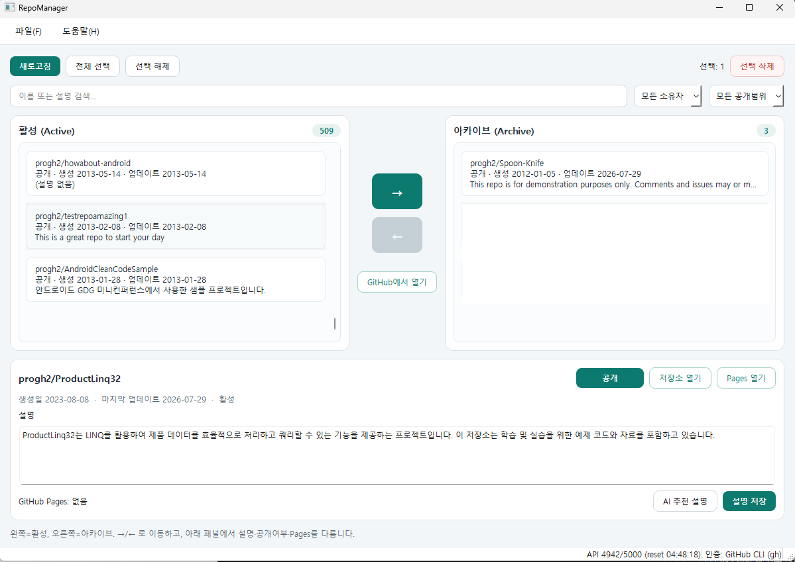

수업이 끝날 때마다, 실습이 끝날 때마다 저장소가 하나씩 늘어납니다.
어느새 수백 개. 웹에서 하나씩 지우기엔 너무 많죠.
RepoManager는 전부 한 화면에 펼쳐놓고, 필요한 것만 골라
백업하고 정리하는 프로그램입니다.
저장소가 많아지면 정리 자체가 일이 됩니다.
이름만 봐서는 언제 만든 어떤 수업인지 기억나지 않습니다. 설명도 대부분 비어 있고요.
혹시 필요한 게 섞여 있을까 봐 못 지웁니다. 한 번 지우면 되돌릴 수 없으니까요.
웹에서 저장소 하나 지우는 데 클릭 예닐곱 번. 200개면 하루가 갑니다.
보고, 고르고, 안전하게 정리하는 세 단계면 끝납니다.
활성과 아카이브를 좌우로 나눠 보여줍니다. 이름·설명·날짜로 검색하고, 공개 여부나 Fork 여부로 걸러내세요.
모든 브랜치와 태그는 물론 이슈·마일스톤까지 ZIP 하나로 저장합니다. 나중에 언제든 되살릴 수 있습니다.
체크해서 한꺼번에 아카이브하거나 삭제합니다. 설명 수정, 공개/비공개 전환, 이름 변경도 앱 안에서 끝냅니다.

되돌릴 수 없는 작업이라 안전장치를 여러 겹 뒀습니다.
DELETE를 직접 입력해야 진행됩니다.내려받은 파일을 두 번 누르면 끝입니다. 압축을 풀 필요도, 파이썬을 설치할 필요도 없습니다.
.exe 파일을 내려받아 두 번 누르면 실행됩니다.
처음 실행할 때 “Windows의 PC 보호” 파란 창이 뜰 수 있습니다. 개발자 서명을 받지 않은 프로그램이라 그렇습니다. 추가 정보 → 실행을 누르면 됩니다.
.dmg 파일을 두 번 누르면 창이 열립니다.
RepoManager 아이콘을 옆의 Applications 폴더로 끌어다 놓으세요.
처음 실행할 때 “확인되지 않은 개발자” 경고가 나오면 이렇게 하세요. 한 번만 하면 다음부터는 그냥 실행됩니다.
macOS 14 이하라면 아이콘을 오른쪽 클릭 → 열기 → 열기로도 됩니다. macOS 15(Sequoia)부터는 이 우회가 막혀서 위 방법을 써야 합니다.
내 Mac에 맞는 파일이 뭔지 모르겠다면: 화면 왼쪽 위 사과 메뉴 → 이 Mac에 관하여를 열어 칩이 Apple M1/M2/M3…이면 Apple 실리콘, Intel이라고 쓰여 있으면 인텔을 받으세요.
내려받은 파일에 실행 권한을 준 뒤 실행합니다.
chmod +x RepoManager-*-linux-x86_64 && ./RepoManager-*-linux-x86_64
파일 관리자에서 속성 → 권한 → 실행 허용을 체크한 뒤 두 번 눌러도 됩니다.
내 저장소를 불러오려면 GitHub 계정 연결이 한 번 필요합니다. 앱을 처음 켜면 설정 창을 안내해 줍니다.
가장 쉬운 방법은 파일 → 설정에서 개인 접근 토큰(Personal Access Token)을 붙여넣는 것입니다.
저장소를 삭제까지 하려면 토큰에 delete_repo 권한이 필요합니다.
자세한 안내는 README에 있습니다.
따로 하실 일이 없습니다. 새 버전이 나오면 앱이 알아서 알려주고, 다운로드 후 설치를 누르면 스스로 최신 버전으로 바뀐 뒤 다시 켜집니다.
직접 확인하려면 도움말 → 업데이트 확인을 누르세요. 알림이 번거로우면 설정 → 업데이트에서 끌 수 있습니다.